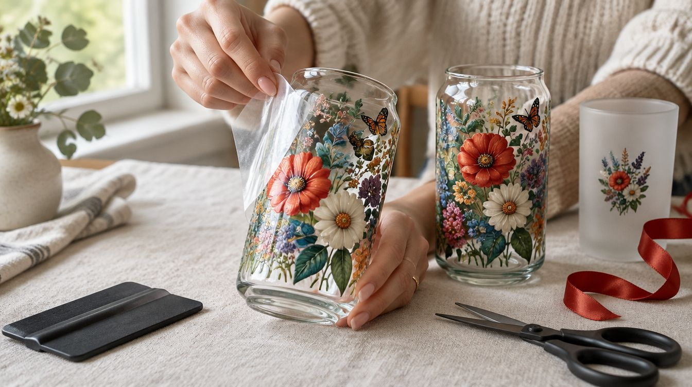

Isı gerektirmeyen sargı baskı: cam bardak, termos, telefon kılıfı, ahşap kutu ve metal yüzeylerde tam renkli, parlak ve suya dayanıklı sonuç. Firmaya toplu, kişiye tek adet.

UV DTF, tasarımın önce özel bir filme basılıp üstüne şeffaf bir taşıyıcı katman alınmasıyla çalışır. Ortaya çıkan transfer bir çıkartma gibi yüzeye yatırılır, üst film soyulur ve baskı orada kalır. Isı, pres ya da fırın yok; bu yüzden “soğuk baskı” deniyor. Sonuç parlak, hafif kabartmalı ve parmakla hissedilen bir katman.
Bu yöntemin asıl gücü kavisli ve sert yüzeylerde. Cam bardağın gövdesi, termosun silindiri, ahşap kutunun kapağı, metal bir levha: kalıp açmadan, tek adetten başlayarak, fotoğraf kalitesinde renkle basılabiliyor. Tekstile uygun değil; kumaş için DTF baskı sayfasına bakın.
Firmalar UV DTF'yi en çok iki yerde kullanıyor: ofis içi ürünlerde (termos, kahve bardağı, masa üstü organizatör) ve müşteriye giden ürünlerde (hediye kutusu, şişe, cam kavanoz, ambalaj üstü küçük seri etiketi). Logo koyu ya da açık zeminde aynı netlikte çıkıyor; kurumsal renk kodları filme birebir taşınabiliyor.
Kalıp gerektirmediği için elli parçalık bir fuar seti de, beş parçalık bir yönetim hediyesi de aynı akışla üretiliyor. Aynı tasarımın tekrar siparişinde film yeniden basılıyor, renk sapması olmuyor. İsteyen firmaya uygulama filmini hazır gönderiyoruz; kendi ekibi ürüne kendisi yapıştırıyor.
Kişiye özel tarafta en çok istenen ürün, sosyal medyada sık görülen cam kutu bardak sargıları: çiçek deseni, isim, tarih ya da kısa bir söz bardağın etrafını dolanıyor. Onun yanında isimli termos, fotoğraflı telefon kılıfı, düğün ve nişan için üzerine çiftin adı basılmış cam şişe ve kavanozlar, çocuklar için suluk ve beslenme kutusu geliyor.
Tasarımı sıfırdan biz çiziyoruz ya da elinizdeki fotoğrafı ve el yazısını filme taşıyoruz. Baskı elle yıkamaya dayanıyor; bulaşık makinesinde zamanla yıpranır, bunu baştan söylüyoruz.
Uygun yüzeyler: cam, seramik, metal, sert plastik, cilalı ahşap, akrilik. Pürüzlü, tozlu ya da yağlı yüzeyde tutmaz; deri ve kumaşa uygulanmaz.
Renk ve detay: tam renkli, degrade ve fotoğraf basılabiliyor; beyaz mürekkep sayesinde koyu ve şeffaf yüzeyde renk kaybolmuyor. Çok ince çizgiler ve küçük punto yazı için tasarımda asgari kalınlığı biz ayarlıyoruz.
Boyut: küçük bir etiketten bardağı tamamen saran sargıya kadar; uygulama alanının ölçüsünü verin, filmi ona göre kesiyoruz.
Bakım: elde yıkama, bulaşık makinesi ve aşındırıcı süngerden uzak tutma. Uygulama sonrası yirmi dört saat suyla temas etmemesi tutunmayı artırıyor.
Hangi ürün, hangi yüzey, kaç adet; uygun olmayan yüzeyi baştan söylüyoruz.
Logo, isim ya da desen ürünün ölçüsüne göre çiziliyor; ürün üzerinde ekranda gösteriliyor.
Transfer basılıyor; ürünü biz tedarik ediyorsak uygulayıp teslim ediyoruz, istenirse filmi hazır gönderiyoruz.
Paketlenip elden ya da kargoyla teslim; tasarım dosyası sizde kalıyor.
Sıradan çıkartma kağıt ya da vinil üstüne basılır ve kenarları görünür. UV DTF'de yalnız tasarımın kendisi yüzeye geçer, arka plan ya da çerçeve kalmaz; baskı kabartmalı ve suya dayanıklıdır. Cam bardakta yıkamaya dayanmasının sebebi bu.
Zamanla evet, özellikle yüksek sıcaklık programında. Elde yıkanan bardaklarda baskı çok daha uzun ömürlü oluyor. Bulaşık makinesi şartsa bunu söyleyin, ürün ve yöntemi ona göre seçelim.
Hayır. UV DTF sert ve pürüzsüz yüzeyler için. Tekstilde ısıyla kumaşa kaynaşan DTF kullanıyoruz; iki yöntemin adı benziyor ama malzemesi farklı.
Evet. Firmalara ve elinde ürünü olan kişilere uygulama filmini hazır gönderiyoruz; yüzey temizlenir, film yatırılır, üstü sıyrılır. Kısa bir uygulama notu ekliyoruz.
Yapıyoruz. Kalıp olmadığı için tek adetle toplu sipariş arasında üretim farkı yok; yalnız teslim süresi adede göre değişiyor.
İletişim
Ürünü ve adedi yazın; yüzey uygun mu, tasarım nasıl durur, aynı gün gösterelim.